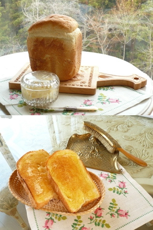

手づくりパン
2008-11-29

今日は朝食のパンについて。
わたしはいつも朝は自分でつくったパンを食べています。
ホームベーカリーで簡単につくれますので、手間いらずでとっても美味しく出来ます。
これを食べてからはもう市販のホテルブレッドには満足できなくなってしまいました。
美味しい時間をさらに心地よくするために道具にもわたしのこだわりがあります。
パンをカットするためのブレッドボードも家具職人さんの手彫りのハンドメイド。
パン皿はロシア製のベレスタという工芸品で白樺の皮で作られています。
テーブルのパンくずを片付けるためのブラシセットなどお気に入りアイテムを揃えています。
冬は薪ストーブの上で焼いてます。外側はカリっと内側はふわっと焼きあがって極上です。